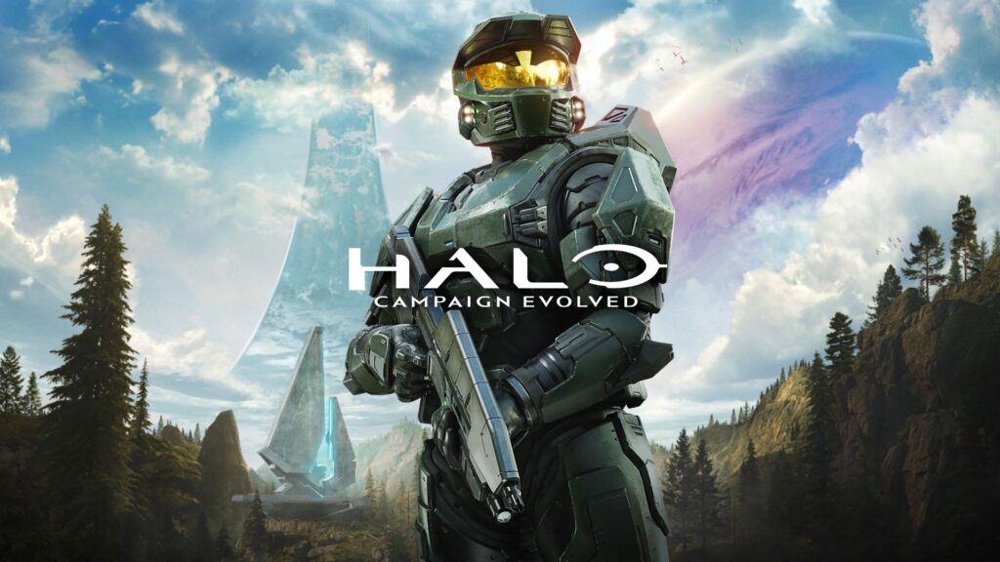
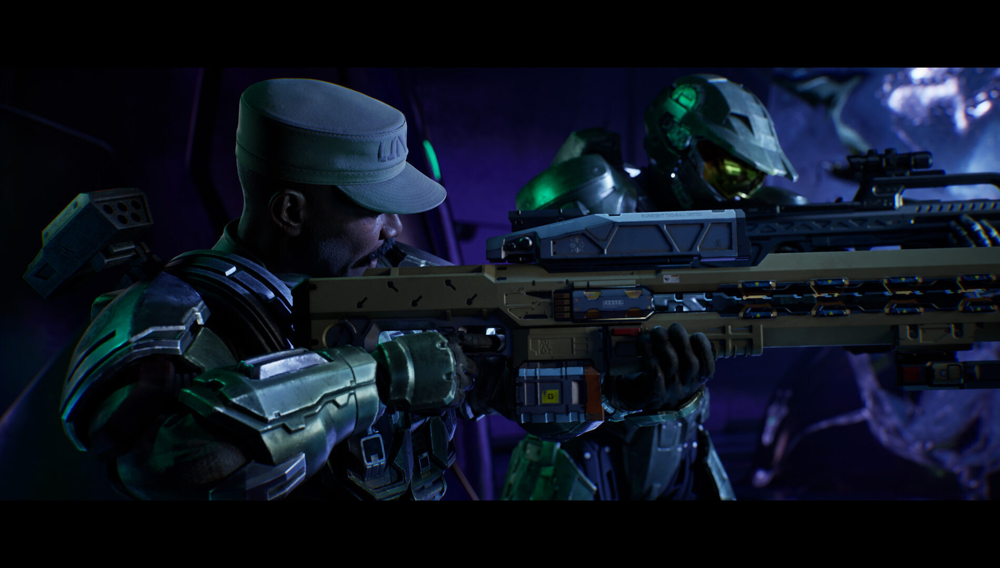
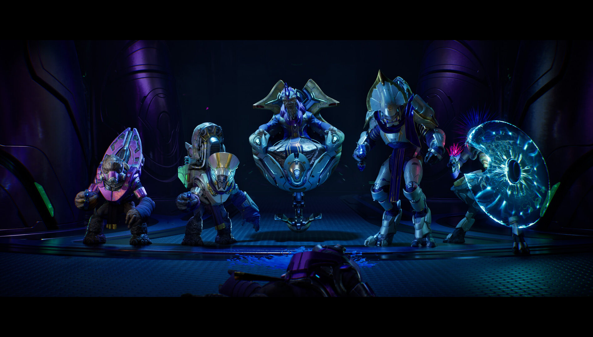
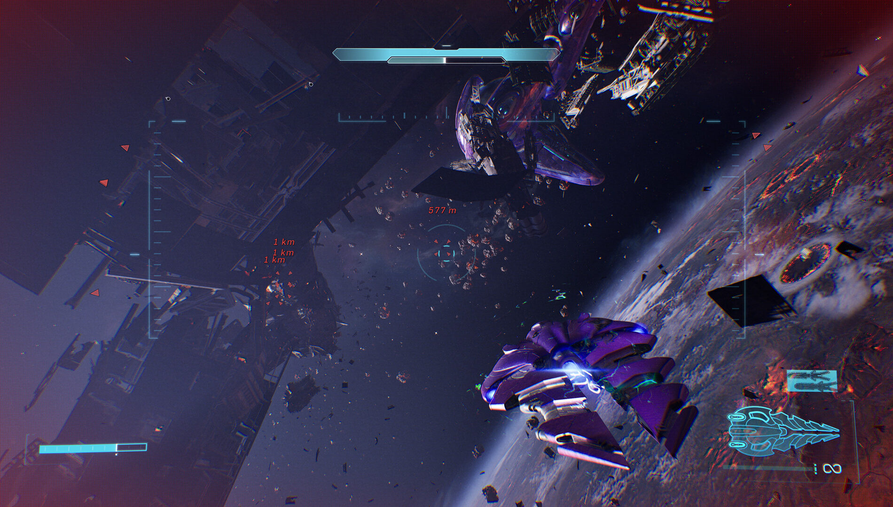
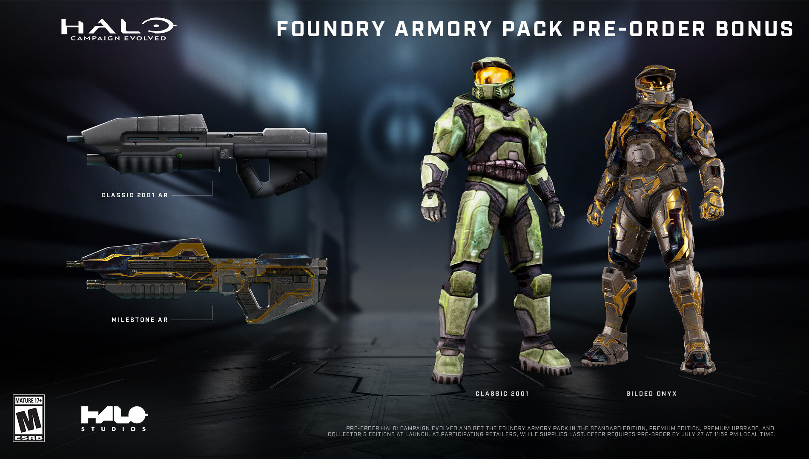
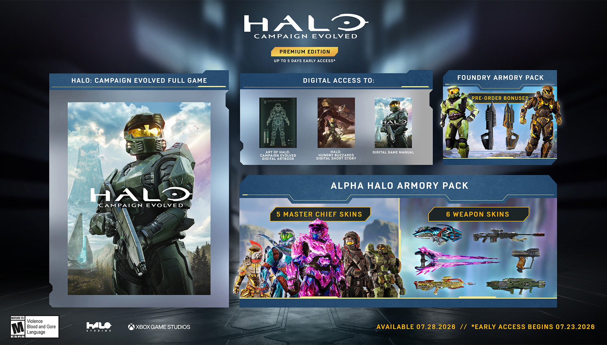
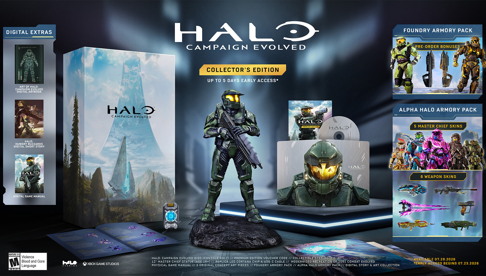

헤일로 캠페인 이볼브드 PS5 출시일 D-7, 얼리액세스 한국시간 언제부터?
안녕하세요. 영원한도시입니다. 헤일로 시리즈는 사실 이 블로그에서 오늘 처음 다뤄보는데, 마침 초대형 리메이크 하나가 딱 일주일 앞으로 다가와서(D-7) 첫 타자로 골라봤습니다. 바로 '헤일로: 캠페인 이볼브드(Halo: Campaign Evolved)'인데요. 출시가 코앞이라 아직 손으로 만져본 게임은 아닌데, 대신 공식 발표에서 확정된 것만 골라 담았습니다.

보시는 이미지가 이번 리메이크의 공식 키비주얼인데요, 2001년 원작 '헤일로: 컴뱃 이볼브드'를 UE5(언리얼 엔진5)로 완전히 새로 만든 작품입니다.
이미지 출처: 엑스박스 뉴스(news.xbox.com) 공식 발표
1. 정식 출시일ㆍ얼리액세스, 누가 먼저 시작하나
정식 출시일은 2026년 7월 28일 오전 8시(미국 태평양시간 기준)입니다. 그런데 전 유저가 같은 날 시작하는 건 아니고, 프리미엄 계열 구매자만 최대 5일 먼저 들어갈 수 있는 얼리액세스가 있습니다. 스탠다드 에디션 그대로면 얼리액세스가 없어요. 공식 발표 페이지에는 구매 옵션별 얼리액세스 여부가 아래처럼 정리돼 있습니다.
| 구매 옵션 | 가격(USD / 국내 정가) | 얼리액세스 |
|---|---|---|
| 스탠다드 | $49.99 / ₩69,800 | 없음 |
| 프리미엄 | $69.99 / ₩94,800 | 있음(최대 5일 먼저) |
| 프리미엄 업그레이드 (스탠다드 예약자용) | +$20 추가 결제 | 있음(최대 5일 먼저) |
| 컬렉터스 | $199.99 / 국내 정가 별도 공지 | 있음(최대 5일 먼저) |
가격ㆍ얼리액세스 구성: 엑스박스 뉴스 공식 발표(2026-06-07) + 국내 예약판매 페이지 종합. 스탠다드로 이미 예약하셨어도 $20만 더 얹으면 '프리미엄 업그레이드'로 얼리액세스만 따로 챙기실 수 있어요.
2. 한국 시간(KST)으로 보면 날짜가 하루 밀린다
여기가 이 글에서 제일 중요한 포인트인데요. 해외 매체가 쓰는 "7월 23일ㆍ7월 28일"은 전부 미국 태평양시간(PT) 기준 날짜예요. 그런데 이 게임은 전 세계가 'PT 오전 8시'라는 딱 하나의 절대 시각에 동시에 잠금 해제되는 방식이라, 한국(UTC+9)처럼 PT보다 훨씬 앞선 시간대는 날짜 자체가 하루씩 밀립니다. 표로 정리해봤습니다.
| 구분 | 미국 기준(PT) | 한국 기준(KST) |
|---|---|---|
| 얼리액세스 시작 | 7월 23일 오전 8시 | 7월 24일 0시 |
| 정식 출시 | 7월 28일 오전 8시 | 7월 29일 0시 |
PT 오전 8시 동시 언락 기준 환산. 뉴질랜드ㆍ호주도 같은 이유로 하루 밀림.
해외 매체 기사만 보고 "어? 얼리액세스가 23일이네" 하고 23일 밤에 접속하면 아직 안 열려 있을 수 있어요. 한국에서 캘린더로 체감하는 실제 날짜는 얼리액세스 7월 24일 0시(23일에서 24일로 넘어가는 밤 12시), 정식 출시는 7월 29일 0시라는 것만 기억해두면 헷갈릴 일이 없습니다.
3. 시리즈 최초 PS5 상륙, 상징성 정리
플랫폼은 Xbox Series X|S, PC, PlayStation 5 세 곳에서 동시 출시됩니다. 이 중에서 제일 눈에 띄는 건 역시 PS5인데요, 헤일로 시리즈의 메인라인 캠페인이 플레이스테이션에 나오는 건 이번이 처음입니다. 지금까지 헤일로는 사실상 엑스박스 독점 시리즈였다는 걸 생각하면 꽤 상징적인 사건이죠. PC 게임패스ㆍXbox Game Pass Ultimate 구독자라면 출시일 당일(데이원)부터 추가 구매 없이 바로 즐길 수 있습니다(구독이 없어도 PC판을 따로 구매할 수 있습니다).
| 플랫폼 | 지원 여부 |
|---|---|
| Xbox Series X|S | 지원(동시 출시) |
| PC | 지원(동시 출시, Game Pass Ultimate 데이원 포함) |
| PlayStation 5 | 지원(동시 출시, 시리즈 최초) |
플랫폼ㆍ데이원 지원 정보: 엑스박스 뉴스 공식 발표 기준
4. 신규 미션 '오퍼레이션 메테오라이트', 총 13개 미션
원작 리메이크 10개 미션에 더해서, 이번엔 '오퍼레이션 메테오라이트'(Operation: METEORITE)라는 이름의 신규 프리퀄 미션 3개가 새로 추가됩니다. 헤일로 컴뱃 이볼브드 본편 사건이 벌어지기 1년 전 시점으로, 마스터 치프와 에이버리 존슨 상사가 초토화된 인류 식민지 '프라미스' 상공에 정박한 코버넌트 농업선에 잠입해 정보를 캐는 내용이에요. 여기서 얻는 단서가 코버넌트 성지 '하이 채리티'로 이어진다고 하니, 원작 팬 입장에선 그냥 덤이 아니라 스토리 상 의미 있는 연결고리인 셈입니다.

마스터 치프와 존슨 상사가 나란히 잠입하는 장면이고, 이번 신규 미션의 핵심 콤비라고 보시면 됩니다. 보시면 원작보다 훨씬 디테일해진 얼굴 표정과 조명이 눈에 띄는데요.
이미지 출처: 엑스박스 뉴스(news.xbox.com) 공식 발표

신규 미션 중 코버넌트 지휘부가 등장하는 컷신 장면인데요, 원작보다 훨씬 영화적으로 연출된 게 느껴집니다.
이미지 출처: 엑스박스 뉴스(news.xbox.com) 공식 발표
| 구분 | 미션 수 | 내용 |
|---|---|---|
| 기존 미션(리메이크) | 10개 | 2001년 원작 '컴뱃 이볼브드' 캠페인을 UE5로 새로 제작 |
| 신규 미션('오퍼레이션 메테오라이트') | 3개 | 본편 1년 전 프리퀄, 마스터 치프ㆍ존슨 상사의 코버넌트 농업선 잠입 |
| 합계 | 13개 | - |
미션 구성: 테크타임즈ㆍ엑스박스 뉴스 공식 발표 종합
헤일로 웨이포인트에도 미션 13개ㆍ최대 4인 온라인 협동 플레이(크로스플랫폼 지원)ㆍ콘솔 2인 스플릿 스크린 지원이 안내돼 있습니다. 온라인 협동이 크로스플랫폼 구조라 Xboxㆍ PCㆍPS5 유저끼리 플랫폼 안 가리고 같이 붙을 수 있고, 콘솔에서는 2인 스플릿 스크린도 지원되니 오프라인으로 나란히 앉아서 즐기는 것도 가능합니다. 13개면 원작 팬 입장에선 거의 완전판(?)이라고 봐도 될 것 같네요.

신규 미션 중 우주 전투 장면도 살짝 공개됐는데요, 보시는 것처럼 스케일이 꽤 커 보입니다.
이미지 출처: 엑스박스 뉴스(news.xbox.com) 공식 발표
5. 에디션별 구성, 스탠다드ㆍ프리미엄ㆍ컬렉터스
구성품까지 자세히 정리하면 이렇습니다. 프리미엄엔 '알파 헤일로 아머리 팩'(마스터 치프 아머 스킨 5종ㆍ무기 스킨 6종)에 더해 디지털 아트북과 트로이 데닝이 쓴 디지털 단편소설 '헤일로: 헝그리 버저즈', 원작 매뉴얼을 되살린 디지털 게임 매뉴얼까지 들어갑니다. 컬렉터스는 여기에 12인치 마스터 치프 피규어ㆍLED로 빛나는 코타나 칩ㆍ스틸북ㆍ오리지널 콘셉트 아트 프린트 3종ㆍ실물 매뉴얼까지 더해지고, Xbox Series X와 PS5용 실물 게임 디스크(콘솔 한정, PC는 디지털만)도 포함됩니다.
| 에디션 | 가격(USD / 국내 정가) | 구성 |
|---|---|---|
| 스탠다드 | $49.99 / ₩69,800 | 게임 본편(13개 미션), 얼리액세스 없음 |
| 프리미엄 | $69.99 / ₩94,800 | 스탠다드 + 얼리액세스 + 코스메틱 아머리 팩 + 디지털 아트북ㆍ단편소설ㆍ매뉴얼 |
| 컬렉터스 | $199.99 / 국내 정가 별도 공지 | 프리미엄 + 피규어ㆍLED 코타나 칩ㆍ스틸북ㆍ아트 프린트 3종ㆍ실물 매뉴얼ㆍ콘솔용 게임 디스크 |
엑스박스 뉴스 공식 발표(2026-06-07) + 국내 예약판매 페이지 종합. 컬렉터스 국내 정가는 아직 별도 공지가 없어 발매 직전 스토어 공식 페이지에서 확인하는 걸 추천드려요.

예약구매 특전인 '파운드리 아머리 팩'(Foundry Armory Pack)이고, 네 가지 구매 옵션(스탠다드ㆍ프리미엄ㆍ프리미엄 업그레이드ㆍ컬렉터스) 전부에 공통으로 붙습니다. 다만 이미지에 박힌 안내처럼 참여 판매처 한정ㆍ수량 소진 시 종료고, 7월 27일 23:59(현지 시간)까지 예약해야 받을 수 있으니 늦지 않게 챙기시는 게 좋아요. (이미지 속 날짜 표기는 미국 현지 기준입니다)
이미지 출처: 엑스박스 뉴스(news.xbox.com) 공식 발표

프리미엄 에디션 구성품 이미지고요, 아트북ㆍ단편소설 표지가 같이 보입니다.
이미지 출처: 엑스박스 뉴스(news.xbox.com) 공식 발표

컬렉터스 에디션 실물 구성품 이미지고요, 스틸북이랑 피규어가 딱 보이시죠?
이미지 출처: 엑스박스 뉴스(news.xbox.com) 공식 발표
6. 한국어 더빙 확정, 지원 범위는
반가운 소식 하나 더 있는데요, 한국어 더빙판이 정식 지원됩니다. 주요 등장인물 음성이 전부 새로 녹음됐다고 하고, Xbox(한국)ㆍSteamㆍPS5(국내) 전부 한글판으로 나옵니다. 실제로 PS5용 한글판 패키지가 국내 판매처에서 이미 예약 판매 중이더라고요. 한국어 더빙판 출시일도 따로 늦춰지는 게 아니라 위에서 정리한 KST 기준 날짜(정식 출시 7월 29일 0시)와 그대로 맞물립니다.
| 플랫폼 | 한국어 더빙 |
|---|---|
| Xbox(한국) | 지원 |
| Steam | 지원 |
| PS5(국내) | 지원(한글판 패키지 예약판매 확인) |
한국어 더빙 지원: 루리웹 등 커뮤니티ㆍ국내 매체 + 국내 예약판매 페이지 종합
· 스텔라 블레이드 블러드레인, 새 주인공 이비 소식 — (네이버에서 해당 글 링크를 직접 넣어 주세요)